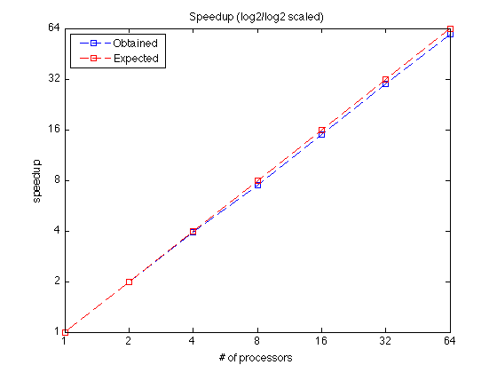
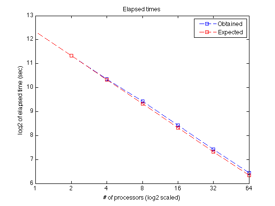
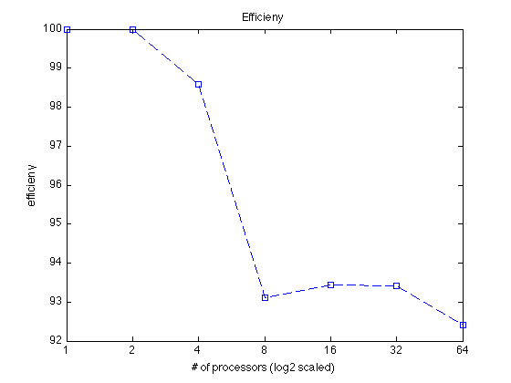

Contents
Time Series Classification Utility (TSCU) test suite.
The test runs TSCU in default settings.
- Author : Huseyin Kaya
- Website: http://web.itu.edu.tr/huseyinkaya/tscu
- Sources: https://github.com/hkayabilisim/TSCU
clear all close all clc
Parallel processing
In order to use parallel processing, you have to have MATLAB parallel toolbox which I have in our Istanbul Technical University. I used one of the UCR datasets which I didn't include in the package. But here I show you how I did the calculations.
Loading data
I loaded the UCR data as follows:
trn=load('../../UCR/DiatomSizeReduction/DiatomSizeReduction_TRAIN');
tst=load('../../UCR/DiatomSizeReduction/DiatomSizeReduction_TEST');Running in parallel
Then I run the program for difference number of processor. The karadeniz_XX is the name of the pool I defined in the MATLAB parallel toolbox.
tscu(trn,tst,'Alignment','SAGA','MATLABPool','karadeniz_64'); tscu(trn,tst,'Alignment','SAGA','MATLABPool','karadeniz_32'); tscu(trn,tst,'Alignment','SAGA','MATLABPool','karadeniz_16'); tscu(trn,tst,'Alignment','SAGA','MATLABPool','karadeniz_8'); tscu(trn,tst,'Alignment','SAGA','MATLABPool','karadeniz_4'); tscu(trn,tst,'Alignment','SAGA','MATLABPool','karadeniz_2');
Recording the times
Then I recorded the classification times for each run. Here are them:
nps = [1 2 4 8 16 32 64]; times = [5146.74 2573.37 1305.21 690.90 344.25 172.19 87.03];
Speed-up and efficieny
By using the elapsed times, it is easy to calculate the speed-up and efficieny.
speedups = times(1)./times; exptimes = times(1)*ones(1,length(nps))./nps; obttimes = times; efficieny = speedups./nps;
Speedup
Finally I plotted the figures in log scale.
addpath('lib/export_fig'); figure plot(log2(nps),log2(speedups),'--bs') hold on plot(log2(nps),log2(nps),'--rs') legend('Obtained','Expected','Location','NorthWest'); xlabel('# of processors'); ylabel('speedup') title('Speedup (log2/log2 scaled)'); set(gca,'XTickLabel',nps); set(gca,'YTickLabel',nps); export_fig('-pdf','-transparent','tscu_test08_speedup.pdf');
Elapsed Times
figure plot(log2(nps),log2(obttimes),'--bs') hold on plot(log2(nps),log2(exptimes),'--rs') legend('Obtained','Expected','Location','NorthEast'); xlabel('# of processors (log2 scaled)'); ylabel('log2 of elapsed time (sec)') title('Elapsed times'); set(gca,'XTickLabel',nps); %set(gca,'YTickLabel',nps); %figuresize(15,15,'centimeters'); export_fig('-pdf','-transparent','tscu_test08_elapsed.pdf');
Efficiency
figure plot(log2(nps),100*efficieny,'--bs') xlabel('# of processors (log2 scaled)'); ylabel('efficieny') title('Efficieny'); set(gca,'XTickLabel',nps); %set(gca,'YTickLabel',nps); %figuresize(15,15,'centimeters'); %print -dpdf 'Experiment42-efficieny.pdf' export_fig('-pdf','-transparent','tscu_test08_efficiency.pdf');